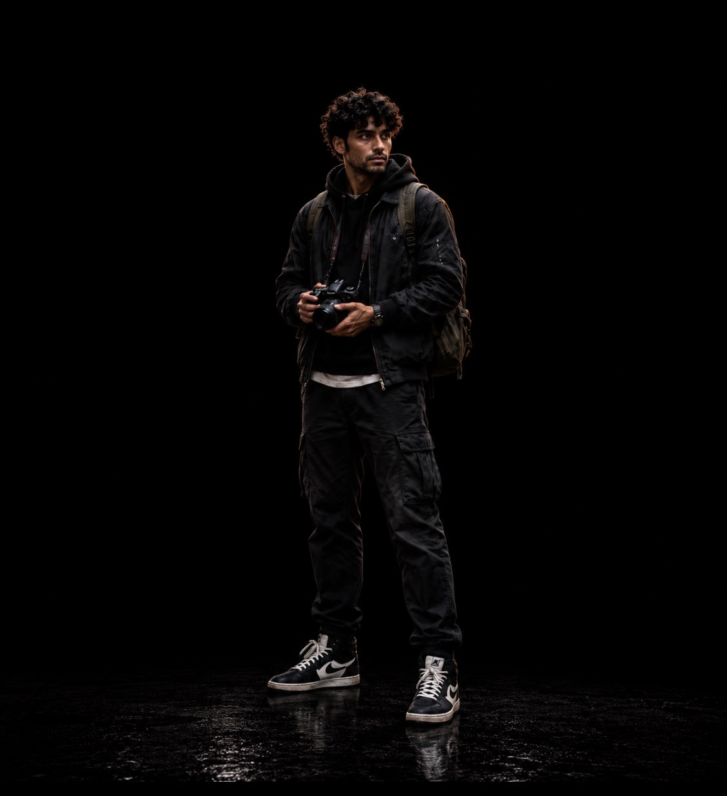

PARAGON FILE // 001
MIRAGE
MALIK SAYEED
MALIK SAYEED

THE PERSON
MIRAGE

THE PARAGON
IDENTITY
THE BOY BEHIND THE MIRAGE
Malik Sayeed never intended to become a Paragon.
A student living in Cairo, Malik's life is changed by events that leave him with abilities he does not fully understand. What begins as something impossible to explain soon forces Malik into a world far larger than his own.
PROFILE
ABILITIES
Echo
ILLUSORY PROJECTION
Mirage can create convincing visual projections that distort what others believe they are seeing.
ECHO MANIFESTATION
Malik can produce multiple visual echoes of himself, making it difficult for opponents to identify his true position.
MISDIRECTION
Mirage uses confusion, false movement and altered perception to manipulate the battlefield rather than relying on brute force.
CONCENTRATION
Maintaining complex projections requires focus. Greater numbers, distance and movement increase the strain on Malik.
FEEDBACK
When an Echo takes damage, Malik experiences the sensation of the impact. Although his physical body is not injured, the pain and sensory shock are real. Repeated impacts can overwhelm him and disrupt his concentration.
ORIGIN
THE BIRTH OF ECHO
Malik Sayeed's abilities first emerged after an unexplained event beneath the streets of Cairo.
What initially appeared to be a series of visual disturbances soon revealed itself as something far stranger. Malik discovered that he could project echoes of himself into the world around him, convincing manifestations capable of deceiving those who saw them.
The more Malik experimented with the phenomenon, the more he realised the echoes were connected directly to his own senses. They were not simply illusions. What they experienced, Malik could feel.